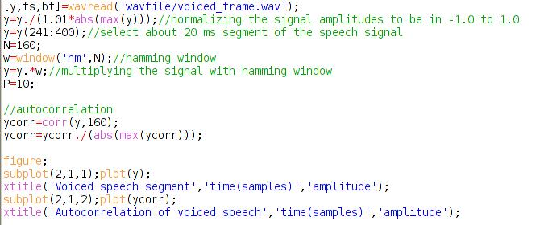
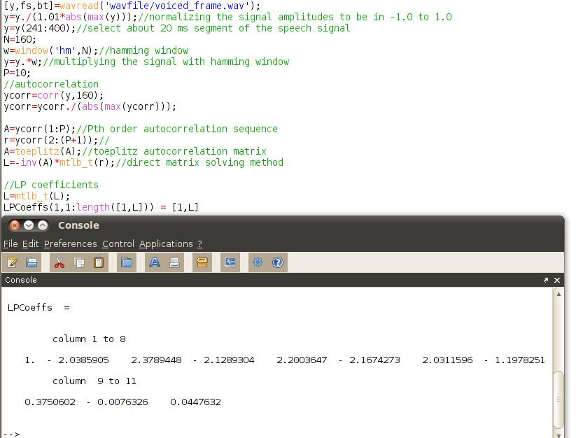
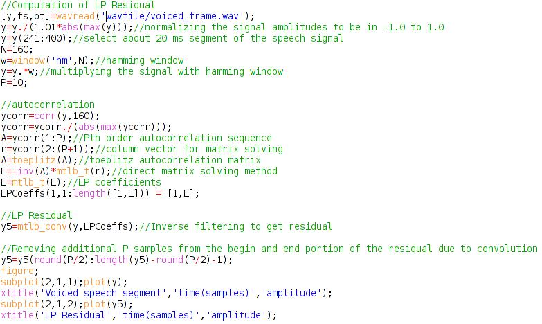
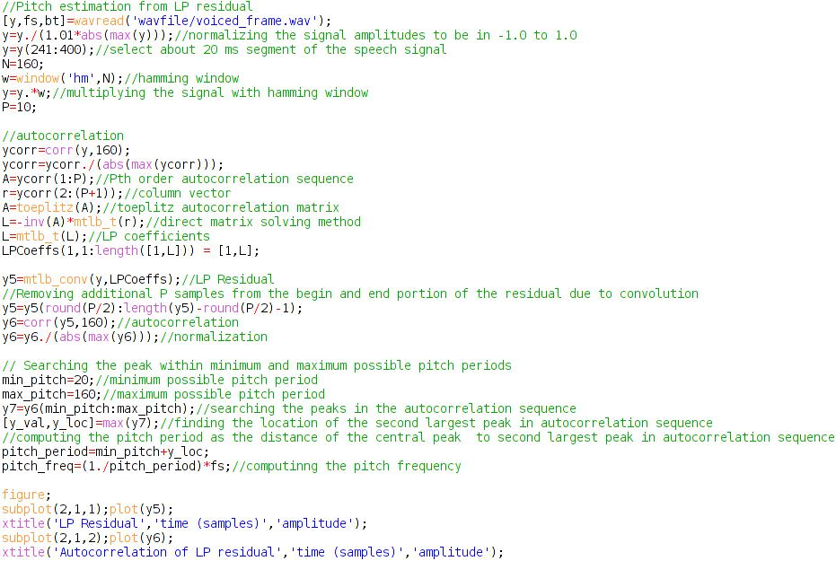
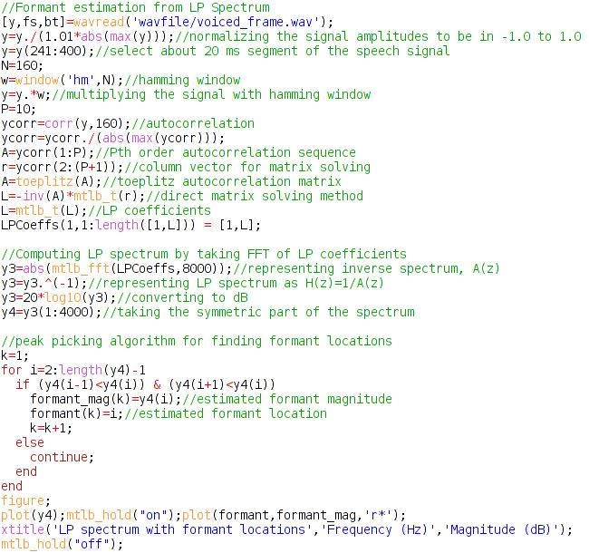
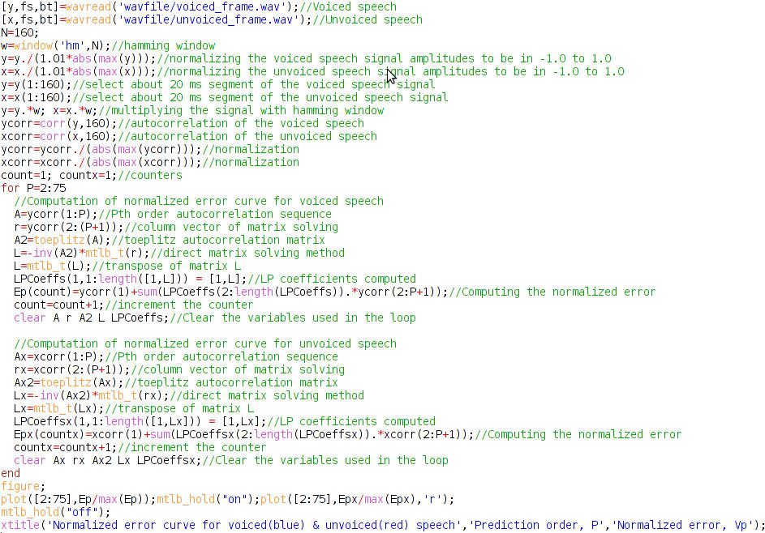

Shakshat Virtual Lab 
INDIAN INSTITUTE OF TECHNOLOGY GUWAHATI
Estimating Linear Prediction (LP) coefficients from the speech
The objective of this experiments to estimate the LP coefficients of order P by autocorrelation method. The first step is is to perform the autocorrelation analysis of speech frames having length of 15-20ms after multiplying it with a hamming window. The Figure 1 gives the 20 ms segment of a voiced speech sampled at 8 kHz and its autocorrelation sequence.

fig.1
After computing the autocorrelation sequence of this voiced frame of speech, the toeplitz auto correlation matrix of size pXp is generated as explained in the equation (11) of theory part. Now the LP coefficients are computed by direct matrix multiplication method as given in equation (14). The following procedure gives the estimated LP coefficients for the given voiced frame of speech.

fig.2

fig.3
Computing LP residual
As explained in the theory part, the LP residual can be computed by inverse filtering. This can be done by convolving the correspnding speech frame with the LP coefficients computed. Figure 2 shows a voiced frame of speech and corresponding LP residual.

Pitch estimation from LP residual
From the Figure 2, it can be observed that the LP residual is characterized periodic nature of strong impulses (higher prediction error) at every pitch mark. The pitch can be computed from the auto correlation of the residual. Figure 3 indicate the LP residual of a voiced frame and its autocorrelation sequence. The pitch can be computed as the time lag of the second peak from the central peak of the auto correlation sequence. The procedure for computing pitch for a given frame LP residual is given below.

Formant estimation from LP spectrum
The LP spectrum provides smooth vocaltract spectral characteristics. This can be computed from the fourier representation of the LP coefficients. Figure 3 shows the LP spectrum obtained from the log magnitude spectrum of the LP coefficients with a frequency resolution of 1 Hz. The formant locations in the LP spectrum can be found by picking the peaks in the LP spectrum. Figure 4 shows the formant valuse obtained from the LP spectrum using a simple peak picking algorithm.

Normalized Error
The objective of the following procedure is to plot the normalized error. The following codes computes the normalized error using the equation (23) in the theory part. After getting the normalized error for each of the prediction order, the normalized error curve is plotted against the corresponding the prediction orders. Figure 6 shows the normalized error curve. The prediction order after which the normalized error is not changing can be selected as the optimal prediction order for that segment of speech.
